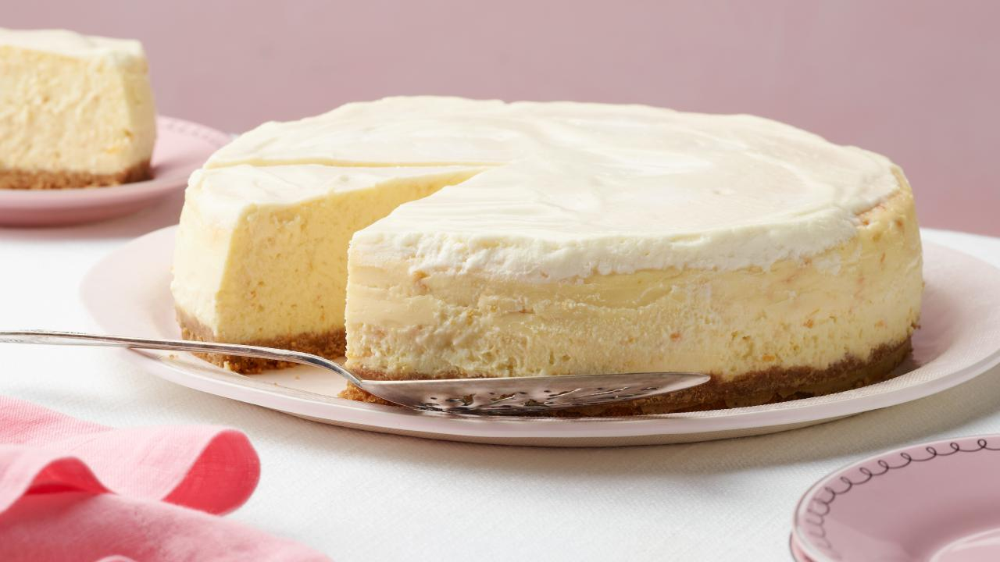

How to make Cheesecake

Description
This is a recipe on how to make cheesecake. It's fast simple easy to make and tastes delicious.
Ingredients
- 1 1/3 cups of gram crackers crushed.
- 3tbsp of sugar
- 1/3 cup of butter
- 4 packages of cream cheese
- 1 cup of sugar
- 1 tsp of vanilla
- 4 eggs
- Preheat your oven to 325f
- Crush your gram crackers then mix them with 3tbsp sugar and butter.
- Beat your cream cheese, 1 cup of sugar and the vanilla until blended. Add the eggs, 1 at a time, mixing on low speed. Pour over the crust.
- Once the oven is done preheating bake for 55 minutes, or until the center is almost set.
- Let it cool before removing from the pan then refrigerate.